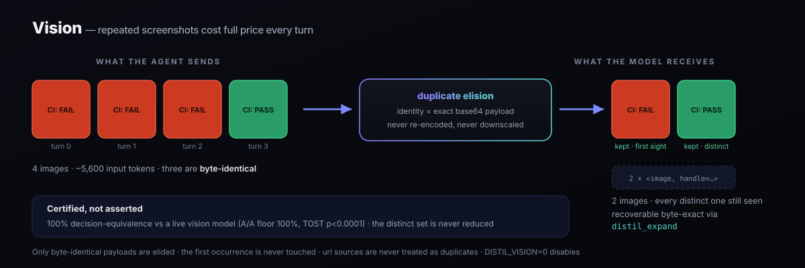

Compression Techniques
Each technique targets a specific slice of agent cost, but two carry the bulk of the win: cache-aware lossless compression keeps the prefix byte-stable so every cached token stays cached, and causal pruning drops what ablation proves never changed a decision. The rest stack cleanly on top — and one of them, recoverable compression, is something no lossy compressor can structurally replicate.
distil/expand.py · distil proxy --expand. Every other compressor is lossy — crush a tool output and the detail is gone. Distil digests large outputs behind a content handle and keeps the original locally, then injects a distil_expand tool so the model can pull back exactly the detail it needs, on demand. Distil resolves the handle from the local store and re-queries transparently, splicing the recovered continuation into the same streamed response — so the recovery adds no time-to-first-token tax and the agent sees one coherent answer, never the internal tool. Two consequences a lossy compressor cannot offer: (1) you compress fearlessly, because nothing is permanently discarded and the model is its own safety net; (2) every distil_expand call is a label that the digested content mattered, feeding the learning flywheel that stops digesting what your workload depends on. Proven end-to-end in tests/test_expand.py.
Content-aware skeleton digest
Module: distil/compress/skeleton.py · Active-recovery tier (+distil_expand) · Loss profile: reversible
For the active-recovery tier (ungated, condition D in E8), large source files are digested to a navigable skeleton rather than a blank handle. The transform keeps every import, class, and def signature with its docstring, retains traceback tail lines, and elides function bodies. The agent can locate any definition from the skeleton and issue a targeted distil_expand call for just the body it needs — rather than re-expanding an entire file to find one method.
Every language, no native parser. Python uses the stdlib ast; every brace-delimited language — JavaScript, TypeScript, Go, Rust, Java, C/C++, Swift, Kotlin — is handled by a generic_code_skeleton that keeps each signature and brace and elides the pure-body runs between them, driven by a string- and comment-aware brace-depth scanner (braces inside "…", '…', `…`, //, # and /* … */ don't count; unbalanced / mid-edit source bails and is left intact — save less, never corrupt). A TypeScript service file folds ~44% smaller with every method signature still visible. This is a competitor's CodeCompressor capability — but delivered with zero native dependencies: distil stays a pure-Python install, where a tree-sitter grammar would be a mandatory native extension. It runs on the active-recovery path only — an elided body needs the distil_expand handle to recover, so it is never emitted on the flat-rate lossless path, where the folds stay information-complete instead.
- Deterministic and stdlib-only. No model call, no network access — the skeleton is produced by a deterministic parse of the source text. This makes it auditable and safe in restricted environments.
- Byte-exact reversible. The full original is stored locally and recovered byte-exactly via its content handle. Decision-equivalence with recovery: 0% change rate. Raw decision-equivalence (without recovery): ~96%, consistent with other reversible methods — safety comes from reversibility, not the raw rate.
- Measured impact in E8. Skeleton digest lifted the ungated (D) condition's pass@1 from 28.8% to 32.4%, by cutting re-expansion thrash from ~9.6
distil_expandcalls per instance to fewer directed lookups.
Sticky expansion
Module: distil/expand.py · Loss profile: reversible
Once the agent recovers a digested block via distil_expand, that block is marked sticky and stays at full fidelity for all subsequent turns in the session. Handles are deterministic (content-addressed), so the suppression key is stable — no re-compression of a block the agent has already demonstrated it needs.
Two effects:
- Eliminates re-expansion thrash. Without sticky expansion, an agent that re-reads a frequently-accessed file re-digests it each turn and must expand it again. With sticky expansion the file stays full after the first recovery, spending zero additional expand calls on it.
- Never-regressing by construction. Stickiness only ever makes distil more conservative — it can reduce savings on a repeatedly-accessed file, never reduce decision-equivalence. The learning flywheel (below) encodes the same intuition at the content-class level; sticky expansion enforces it at the instance level within a session.
① Cache-aware compression
Module: distil/compress/cache_aware.py · Loss profile: lossless
The dominant cost lever in a multi-turn agent loop is not token count — it is cache hit rate. A cache read costs roughly 0.1× fresh input; a cache miss costs full price. Distil models the full multi-turn loop, tracking the longest contiguous prefix that is identical between consecutive turns. Any compressor that rewrites that prefix — even to save tokens — destroys the prefix match and loses the 10× discount.

Cache stabilization
Two lossless pre-processing steps run before any compression, keeping the prefix byte-stable turn over turn:
- Schema canonicalization — recursively sorts JSON object keys in tool payloads and API responses. Two semantically identical JSON objects with different key orders produce byte-identical text after canonicalization and hit the prefix cache.
- Volatile-field extraction — fields that change every turn (timestamps, UUIDs, JWT tokens, request IDs) are lifted out of the stable prefix into the volatile tail. The stable portion stops churning; the volatile tail is compressed separately.
Scope: these numbers are the simulated cache-aware strategy on the corpus. The live adapter reaches the same property only from 1.45 — before that its recency carve-out slid forward each turn and rewrote already-cached content, costing every cache read. See CACHE.md.
The simulation
cache_aware.simulate() models four strategies across a full trajectory and reports per-turn cost breakdown — cache reads, cache writes, fresh tokens. Run distil savings to see the numbers on any trajectory.
$ distil savings --pricing claude-opus-4-8 strategy $ / run vs baseline cache hits ------------------------------------------------------------------------ baseline (no cache, no compress) 0.01524 0.0% 0 cache only 0.01115 26.8% 1,028 naive compress + cache 0.01696 -11.3% 0 ← busts cache distil (cache-aware lossless) 0.01023 32.8% 1,028
Cold-point recompression
Module: distil/coldpoint.py · ADR 0014 · Loss profile: reversible · not yet measured live
Keeping the prefix byte-stable means an old tool result, once sent, is billed at the cache-read rate on every later turn for the rest of the session. The one moment it can shrink for free is a turn that arrives after the provider's cache entry has already expired: the whole prefix is re-written then anyway. On such a turn distil replaces older tool output with a distil_expand-recoverable stub and forwards those same stubs on every later turn, so the smaller prefix is what gets cached from then on. It acts only when expiry is certain from distil's own clock and the lineage is unambiguously one conversation; the freshest turns, exact-quote reads, expanded blocks and anything an Edit quotes are never touched. Anthropic only, wherever the recoverable digest runs. --no-cold-point opts out. Its gate is an rc soak plus a live A/B on the provider's own cache read/write totals, and neither has run yet. Contract: clause (h).
② Salience protection (frontier shifter)
Module: distil/compress/salience.py · Loss profile: lossless
Lossless compression is safe by construction, but it is also blind — it will happily drop the one line that carries the agent's decision if that line happens to be compressible. Salience protection is a model-free guard that runs before any content reduction and marks lines that must survive regardless of savings pressure.
Four signals combine, all computed from the text alone (no external model call, no learned weights):
- Pattern matching — known identifier shapes (UUID, git SHA,
PREFIX-NNN, email, IPv4, semver, file paths). - Entropy scoring — high-entropy mixed-alnum tokens carry information-dense content (novel ID formats no fixed pattern anticipates) and are protected regardless of keyword matches.
- Cross-reference detection — a token referenced in two or more blocks is an anchor the agent navigates by, treated as load-bearing even if it looks inert in isolation.
- Surprise (
surprise_lines) — error/failure/timeout/anomaly lines and unified-diff changed lines, over-retained regardless of the other three signals because a lossy compressor drops the incongruent detail first, and that detail is what decides the next action. - Query relevance (
compress/intent.py) — lines matching a salient term from the agent’s own request (tool-use arguments, the latest user ask) are additively pinned. distil is a proxy: the query and the output arrive in the same request, so the relevant line is kept even when no fixed rule knows which line matters. A selectivity guard drops terms matching most lines, preserving compression when intent is too broad. Phase 2 (compress/query_relevance.py, 1.16.0) adds the semantic case: an embedding-free logistic model over query-conditioned features (overlap, selectivity, proximity to a lexical hit) pins lines that answer the query without sharing a word with it (“retry limit” →max_attempts = 5). It is trained on distil’s own content-free expand flywheel, unioned additively over phase 1 (so it only ever widens keeps), and promoted only if held-out recall beats the phase 1 lexical baseline. With no promoted weights it is exactly phase 1. A zero-dependency semantic bridge (compress/lexicon.py+query_assoc.py, 1.17.0) makes the semantic match always-on, no model or embeddings required: a suffix stemmer, a curated technical synonym map (retry↔attempt, timeout↔deadline…) with compound-identifier splitting (max_attempts→{max, attempts}), char-trigram fuzz, optional pure-Python distributional vectors, and — the moat — associations distil learns from its own expand flywheel (tenant↔org) stored as hashed pairs (content-free). Every bridge is additive, so a wrong match only wastes a little compression, never an answer.
Protection is line-aware: the guard operates on individual lines, not blocks, so it can preserve a single critical row inside an otherwise-compressible table. The cost is a small savings reduction — roughly 2.4 percentage points on the benchmark corpus — in exchange for a structural guarantee.
③ Causal / counterfactual pruning
Module: distil/replay/ablation.py · Loss profile: certified
The eval engine in Distil is a discovery engine. The algorithm:
- For each context block in the trajectory, remove it and replay the trajectory.
- Record whether any turn's decision changed.
- A block that never changed a decision across all its occurrences is causally inert — provably safe to drop.
This is the sense in which measurement produces the compression policy. Speculative retrievals never cited, stale history that no longer affects any tool call, diagnostic context superseded by later turns — these all show up as zero-impact in ablation and can be pruned with a causal guarantee, not a heuristic guess.
$ distil prune causal ablation over 'sre-disk-incident' — what is free to drop? block occ tokens verdict doc-0 4 312 PRUNE (causally inert) doc-1 4 303 PRUNE (causally inert) obs-0 4 234 keep (changed a decision) obs-1 4 198 keep (changed a decision) system 4 218 keep (changed a decision) tokens provably free to drop: 615 across 2 block(s).
claude-opus-4-8), running at ~0.026 ms/turn — roughly 1,000× faster than model-based alternatives. The certified guarantee uses Learn-Then-Test / CRC (arXiv:2110.01052 / 2208.02814), distribution-free and valid at finite sample size.
④ Vision — duplicate elision, certified
Module: distil/compress/vision.py · Strategy: vision · Loss profile: reversible, gated on a certificate
A 1024×1024 image is roughly 1,400 input tokens, and an agent that screenshots a UI, re-reads a diagram or polls a dashboard pays that on every turn the block stays in context. Distil used to compress the text around such a block and leave the block itself at full price.

Why not resize
The prevailing technique in this space is an ML router that picks a resize/quality tradeoff. That is lossy by construction: the model sees a different image, and nobody can say whether the answer changed. Distil's contract is that a lossy tier ships only behind a decision-equivalence certificate — so instead of degrading images, it removes the ones the model has already seen:
- Identity is the exact base64 payload. Nothing is re-encoded, downscaled, or re-compressed.
- The first occurrence is never touched — the model has to actually see the image.
- A repeat becomes a short reference carrying an 8-hex handle;
distil_expandreturns the originalsourceobject byte-exact. - URL sources are never treated as duplicates. Two occurrences of one URL are not evidence of the same pixels — signed URLs, dashboards and cache-busted screenshots all serve different bytes from a stable URL. Eliding on that basis would assert an identity nobody verified.
distil certify --strategy vision --runner anthropic --trajectory corpus/vision-ci-dashboard.json
The first live run failed — and that is worth knowing, because it is what a real gate looks like. The compressed arm chose open_failing_build where the baseline chose promote_release. The cause was not the compression: the grading harness was hoisting every image to the front of the turn, severing each screenshot from the caption identifying it. An A/B whose two arms differ in prompt shape measures the shape. No offline oracle would have surfaced that, which is why this content type is certified against a live model rather than a synthetic one.
What you inherit, and how to override it
The maintainer's certificate ships inside the package, so de-duplication is on by default — certifying requires a vision model and an API key, and without this the capability would be inert for everyone but its author. The certificate states its own scope (model, corpus, verdict, reproduce command) and explicitly does not certify your traffic.
Certify your own workload and your result wins, including a failure: a local FAIL is never overridden by the shipped PASS. The gate resolves DISTIL_VISION → local certificate → shipped certificate, and every source must parse and carry an explicit passing verdict. Set DISTIL_VISION=0 to disable outright.
Design record: ADR 0003 (why images, and why not resize) and ADR 0004 (what blocked certification, and how it was closed).
Risk-graded tiers
Every technique is assigned to a tier based on its loss profile. Distil applies them in order — lossless ones unconditionally, certified-lossy ones only when the gate passes.
Provably lossless
Reconstructable transforms with no assumptions about content semantics. Applied unconditionally.
- JSON minification
- Run-length encoding collapse
- Whitespace normalization
Module: compress/tier0.py
Reversible digest
Decision-aware digest: the compressed form embeds an 8-hex handle; the original is kept locally and re-expands on demand.
- Large tool results (≥ 6 lines) digested
- Handle → original in local RestoreStore
- Reject-if-bigger invariant enforced
- A dropped run no longer than its marker is shown inline instead of pointed at (a small gain — zero on the bundled corpus)
Module: compress/tier1.py
Lossy, gated
Pruning applied only at ratios the non-inferiority gate certifies. Never ships without a TOST PASS.
- Causal pruning (ablation-discovered)
- Lossy strategies blocked if gate fails
- Subscriptions: lossless-only policy
Gate: certify/gate.py
Keep-model codec (pluggable)
Modules: distil/codec/learned.py · distil/codec/transformer.py · Loss profile: pluggable
For per-line decisions about which content in a tool result is worth keeping, Distil exposes a pluggable KeepModel seam. Three implementations ship, from the heuristic default through to a retrain-on-your-traces transformer.
The three tiers at a glance
| Model | Accuracy (held-out) | F1 | Dependencies | When to use |
|---|---|---|---|---|
| SalienceKeepModel (heuristic) | — | — | None (stdlib only) | Default. Rule-based: error keywords, digit density, structure detection. Zero training cost. |
| LogisticKeepModel (built-in) | 96.4% | 0.98 | None (stdlib only) | Trained on corpus labels derived from the heuristic. Ships in the wheel as codec/weights.json. Zero extra installs, better generalisation than rules alone. |
| TransformerKeepModel (upgrade) | 96.3% (demo) | 0.98 (demo) | pip install 'distil-llm[train]' |
ONNX inference adapter. Retrain on your own traces for production quality. Demo checkpoint on the v0.1.0 release. |
Heuristic default — SalienceKeepModel
distil/codec/keep_model.py · A deterministic rule-set that fires on error keywords, command verdict lines (1955 passed, BUILD SUCCESSFUL, exit codes — pinned at the never-drop floor, because a green run’s answer carries no error word), structured data markers (DECISION:, key:value lines, pipe tables), digit density, and debug-noise keywords. Always available; no training step, no external dependencies.
The Tier-1 digest also classifies each block by content kind before applying these rules (distil/compress/keep_policy.py): a log block pins its pass/fail verdict lines (3 passed, BUILD SUCCESSFUL), a traceback pins every stack frame (File "…", line N), and a diff block pins file and hunk headers — each on top of the shared DECISION:/error base net.
Logistic keep-model — built-in, zero-dep
distil/codec/learned.py · A logistic-regression classifier trained entirely in pure Python (stdlib only), implementing the same KeepModel protocol. Key design decisions grounded in the source:
- Feature set: nine features defined in
codec/features.py— bias, decision-marker indicator, error keywords, structured-data signal, digit density, length, debug keywords, uppercase ratio, blank-line flag. All normalized to [0, 1]. - Training: full-batch gradient descent on binary cross-entropy with L2 regularization (
l2=1e-4, 400 epochs). Labels are derived fromSalienceKeepModel: a line is labelled keep (1.0) if the heuristic scores it ≥ 0.6. - Train/test split: deterministic, SHA-256 hash of the raw line — reproducible across machines with no random seed dependency.
- Held-out performance: 96.4% accuracy, 0.98 F1 on the bundled corpus test split. The labels are distilled from the salience heuristic, so this measures agreement with that label source, not an independent ground truth.
- Weights: persisted to
distil/codec/weights.json; load withLogisticKeepModel.load(). The weights ship inside the installed wheel — no training step required.
Transformer keep-model — ONNX inference adapter
distil/codec/transformer.py · An ONNX-backed token-classification transformer implementing the same KeepModel protocol. Heavy deps (onnxruntime, transformers) are lazy-imported so the stdlib core runs untouched. This class is the inference adapter only — it does not ship a pretrained checkpoint.
- Inference: tokenizes each line, runs the ONNX session, applies softmax over the label axis, and aggregates per-token keep-probabilities via mean of top-3 — more robust than plain mean on mixed-content lines.
- Never-drop floor: any line containing
DECISION:is forced to score 1.0 regardless of model output, matching theSalienceKeepModelguarantee. - Demo checkpoint: a checkpoint trained on the bundled corpus (96.3% acc / 0.98 F1) is attached to the v0.1.0 release. This is a demo — for production quality, retrain on your own traces.
- Loading:
TransformerKeepModel.from_pretrained(onnx_path, tokenizer_dir). Requirespip install 'distil-llm[onnx]'for inference, or'distil-llm[train]'to train.
distil ingest to convert your request logs into a corpus, then distil train-transformer --out ./my-keep-model to produce a checkpoint tuned to your traffic.
Training the transformer on your traces
distil/codec/train_transformer.py · Fine-tunes a HuggingFace token-classification model (default: google/bert_uncased_L-2_H-128_A-2, ~4 MB) using the same label pipeline as the logistic model, then exports to ONNX. Requires the train extras.
$ pip install 'distil-llm[train]' # Train on the bundled corpus (replace with --corpus ./mycorpus for real traces) $ distil train-transformer --out ./my-keep-model Epoch 1/3 train_loss=0.4821 Epoch 2/3 train_loss=0.2134 Epoch 3/3 train_loss=0.1589 Exported ONNX to ./my-keep-model/model.onnx Accuracy=0.9630 F1=0.9812 Load with: TransformerKeepModel.from_pretrained('./my-keep-model/model.onnx', './my-keep-model') # Use the checkpoint via the Python API from distil.codec.transformer import TransformerKeepModel model = TransformerKeepModel.from_pretrained( "./my-keep-model/model.onnx", "./my-keep-model", ) score = model.score("ERROR: disk at 94% capacity", "tool_output") # → 0.97 (keep)
KeepModel protocol and are interchangeable at the seam.
Gist caching (research-only)
Module: distil/gist.py · Not on the request path
A content-addressed cache that replaces a tool schema already sent with a compact reference. It exists as a module and is not wired into any server: the request tools array is forwarded untouched. On real traffic tool definitions bill almost entirely at the cache-read rate and a lossless compactor could remove little, so rewriting the head of the cached prefix is not worth the risk — ADR 0012. The lever that does move tool cost is Claude Code's own MCP tool search, which distil wrap -- claude keeps on (ADR 0013; unverified on a metered session so far), and removing connectors distil discover shows you never call.
Delta / append-only context
Module: distil/cachedelta.py · Loss profile: lossless
Context history is append-only — a block present in turn N must carry identical bytes in turn N+1 (enforced by the byte-fidelity gate). The delta engine exploits this: only the new blocks added since the last turn are transmitted at full cost. Stable history is already in the cache and costs only cache-read price. The delta layer ensures no block is re-sent in a way that would corrupt the prefix hash.
BM25 partial retrieval (research-only)
Module: distil/retrieval.py · Not on the request path — nothing in the proxy or distil_expand calls it today; expansion returns the whole original.
When a context block is digested (Tier 1) and represented by a handle, BM25 partial retrieval lets the agent query the most relevant chunks of the original without re-expanding the entire block. This keeps the context window focused while preserving access to the full original content — useful for large tool outputs, retrieved documents, or log dumps where only a fraction is decision-relevant.
Reversible structured compaction
Module: distil/compress/structured.py · in the Tier-1 path · Loss profile: lossless
The content agents actually traffic in — JSON record arrays, SQL rows, telemetry — is re-encoded into a compact columnar form: repeated keys stated once, values listed as rows. A homogeneous array of N records pays its keys and punctuation N times in JSON; the folded form pays them once — typically a 40–70% reduction with no loss of meaning. Unlike lossy structural crushing, nothing is discarded: the byte-exact original is kept in the restore table and is one expand() away.
Nested records, not just flat rows. Real tool output — API responses, search hits, DB rows — nests dicts and lists inside each record. The strict scalar fold leaves those on the table; fold_records() extends the columnar fold to nested records by rendering each non-scalar cell as compact JSON and marking the JSON columns in the header. This is the exact shape a lossy "smart crusher" targets — but here it stays fully reversible, behind the same expand() handle, with the decision-equivalence gate still holding.
Constant-column collapse (Parquet-style entropy coding). A nested column that repeats one value in every row — status:"active", a region, a flag — pays N identical copies for zero information beyond "all rows share this." Distil hoists it into a single «=name value directive and drops it from the body, the same constant-encoding a columnar database applies to a low-entropy column. On enum-heavy tool output this takes the nested fold from ~42% to ~62% fewer tokens — and because the shared value is stated once, verbatim, the view stays maximally readable (no index or delta the model must decode). Dictionary-indexing varying columns is deliberately declined: that indirection is a decision-equivalence risk a constant hoist doesn't carry, and preserving the model's read is the whole point.
The same folds run on the live subscription / lossless path in a self-describing form — the compact table is emitted inline with no restore handle, so there's nothing to expand and nothing that invites a distil_expand the flat-rate client can't issue. Fewer tokens per turn, fully in-context, ToS-safe: the real subscription win even when there's no per-token bill to cut.
Template mining (Drain / LogPai family)
Module: distil/compress/structured.py · template_fold() · Loss profile: lossless
Logs and telemetry are runs of near-identical lines that differ only by a timestamp, ID, or number. Where run-length encoding only collapses byte-identical lines, template mining masks the varying tokens, groups lines by their skeleton, and collapses a run into one template + a compact variable table — the production log-parsing technique (Drain / LogPai), applied to agent context. Every variable is retained; the original is fully recoverable. On log-heavy content this lifts lossless savings several points on its own.
Cross-turn dedup (streaming)
Module: distil/compress/dedup.py · StreamingDedup · Loss profile: lossless
Agents re-read the same artifact — a file, a log, a design doc — every turn. Prompt caching only discounts the contiguous prefix, so a large block that recurs in the volatile tail is re-billed in full each time it reappears. The streaming compressor remembers what it has already sent and replaces a recurring inert block with a compact reference, recoverable on demand. It only references blocks that carry no decision marker. This is the lever that turns a multi-turn loop's quadratic re-read cost into near-linear, on exactly the content the prefix cache cannot reach. See the Benchmark for the measured contribution.
Cache-delta context coding (coding-agent hot path)
Module: distil/cachedelta.py · distil proxy --session-delta · opt-in · Loss profile: lossless

Multi-turn coding agents (Claude Code, Codex, Gemini CLI) loop on read → edit → re-read. The re-read file is a near-duplicate of what the agent already has in context — one hunk changed. Exact-duplicate dedup (the state of the art elsewhere, e.g. Headroom's dedup_identical_items) misses it entirely and re-sends the whole file. Cache-delta coding handles both cases, confined to the volatile suffix so the stable, already-cached prefix is never touched:
- Exact re-send → back-reference (a compact pointer to the earlier occurrence already in cache).
- Near-duplicate → reference + unified diff (only the changed hunk is transmitted).
Both transforms preserve cache-monotonicity: the stable prefix is never mutated, so every prompt-cache hit that existed before the turn still exists after it. The prior version of the file remains present earlier in the cached conversation, so prior version + diff carries the same information the agent needs to take its next action — decision-equivalent by construction. The full file is recoverable byte-exact via distil_expand.
Re-read delta (on by default, inside the exact-quote guarantee)
Module: distil/compress/rereaddelta.py · ADR 0010 · Loss profile: reversible
Cache-delta above compares blocks. That is the wrong unit for how agents actually re-read. Measured over 2,489 Claude Code sessions: 51.4% of file reads are a re-read of a path already read in the session, but only 12.8% are byte-identical — the rest are a different line range of the same file, or the same file with one hunk changed. Two disjoint windows onto one file are not 50% similar as blocks even when every line they share is identical, so the near-duplicate gate misses 608 of 726 changed re-reads.
The line is the right unit. 50.6% of a re-read's tokens are lines already delivered verbatim earlier in the same conversation. So the re-read delta matches on line content: the longest run the new read shares with an earlier read of the same path becomes a reference stub, and every other line stays verbatim.
This runs inside the exact-quote exemption rather than around it, so it is the one transform that recovers savings on content distil has promised to keep byte-exact. It stays safe because the guarantee is about the conversation, not about any one block — an Edit(old_string=…) applies if its quote occurs byte-exact anywhere in the forwarded payload:
- Only reads matched by the tool-name table (
Read,view, …) may be referenced. Those are never superseded, so the referenced lines cannot leave the conversation later. A shellcatmay be a target but never a base. - References never chain: a block that has been elided is not itself a base.
- Cuts interior to the block are pulled back 20 lines, so a quote straddling the boundary still occurs contiguously in the base.
- A run under 8 lines is not worth a stub and is left alone.
- The freshest tool output is never elided. A re-read the agent has just issued is exactly the output it reasons over to choose its next action, so the recency carve-out applies here like everywhere else.
It is cache-safe by the same construction as cache-delta and for the reason the cache contract actually requires: the plan is a pure function of the message prefix, so a block encodes to the same bytes on every later turn and there is never anything to invalidate. The elided lines are recoverable byte-exact via distil_expand.
benchmarks/codebench.py, 20 sessions / 320 turns) under the client shape that bills — newest turn pinned, whole history cached — the PAYG digest row moves from 31.4% to 41.7% token savings and 35.8% to 49.1% cache-aware dollar savings, with the quote-survival invariant intact. That corpus is nothing but reads, so it is an upper bound; on real traffic the addressable share is about 2.8% of tool-result mass. distil bench is unchanged — its corpus has no re-read of one path.
AST-structural delta (deepest layer of cache-delta)
Module: distil/astdelta.py · stdlib ast · model-free · Loss profile: lossless
The deepest layer of cache-delta coding. For Python source, the cross-version diff operates on parsed structure rather than raw text: each top-level definition is fingerprinted with ast.dump (attributes off), which is invariant to whitespace, comments, and import order. Two consequences a textual diff cannot offer:
- A reformat-only re-read — whitespace changes, comment edits, import reordering — is recognised as "no definition changed" and referenced whole. Textual diff would produce a large spurious patch.
- Only definitions whose AST actually changed are sent in full. Everything unchanged is a back-reference, regardless of how many lines moved around it.
Non-Python files and unparseable source (mid-edit, syntax errors) fall back automatically to the standard unified diff — the technique never fails a request, it just does less when the AST is unavailable.
ast module only. No external parser, no learned weights, no network calls.
Certified-fallback & the equivalence dial
Module: distil/compress/adaptive.py · certified_fallback · distil frontier
The aggressive digest is recoverable but not byte-identical to the model's eye, so on genuinely ambiguous decisions it can occasionally tip a different (still reasonable) choice. Certified-fallback removes that risk by construction: for each turn it keeps the most aggressive transform only if a runner confirms the decision is unchanged — else it falls back to byte-exact Tier-0, else to no compression. The result is 100% decision-equivalent by construction under whichever runner you pass — the free structural runner, or the live model itself (--runner anthropic).
On top of that sits the equivalence dial, target_equivalence. At 100% you get certified-safe compression. Relax it — say 0.95 — and Distil grants a bounded divergence budget of floor((1−target) × turns) turns that keep the deepest transform even when it changes the decision, spending the budget on the highest-saving turns first. You trade a measured, explicit amount of equivalence for deeper savings — never a hidden one. Trace the full curve with distil frontier.
The learning flywheel (self-improving)
Module: distil/learn.py · distil learn
This is what makes recoverable compression compound. Every distil_expand call is ground truth that a digested block was load-bearing. Distil tallies these by a coarse, content-free signature (content class × size bucket, e.g. json:l — never the content itself) and learns which signatures your agents keep expanding. Those it stops digesting, keeping them byte-exact. Because the policy only ever makes Distil more conservative, it is never-regressing by construction — it can reduce savings on an expand-prone signature, never reduce decision-equivalence — so it needs no gate to be safe. The stats live locally (atomic writes, content-free); inspect the learned policy with distil learn. The more your agents run, the better the fit to your workload.
Module: distil/compress/guideline.py · written, not yet fed — record_trajectory_outcome has no callers, so this policy runs on its defaults, and distil doctor says so. What it is built to do: a second flywheel learns from the coarser signal that actually matters at the task level: the trajectory outcome. Every matched full/compressed run fed to distil certify-trajectories is evidence — when a task the full context solved fails under compression, the content-free signatures digested in that run are suspects; signatures whose digestion keeps co-occurring with regressions get protected, kept byte-exact, automatically. It is never-regressing by the same construction as the expand flywheel above, just driven by end-to-end task success instead of a per-step expand request. See Concepts → The trajectory-level certificate.
Salience protection's fourth signal, surprise (above), applies this same intuition ahead of time: error, failure, timeout, and anomaly lines are over-retained by default, because a lossy compressor drops the incongruent detail first — and that detail is what decides the next action.
Code skeletons from a real parse
When a tool result is source code, the reversible tier keeps its structure — imports, types, every function signature — and folds function bodies behind a handle the agent can expand. Python has always used the standard library's ast. Other languages used a brace-counting heuristic; with the optional [code] extra they get a real parse.
$ pipx install 'distil-llm[code]' # or: pip install 'distil-llm[code]'
What changes
- Languages: Go, Rust, Java, C, C++, Ruby, TypeScript, JavaScript. Ruby is new ground: it has no braces, so the heuristic never saw it.
- Bodies elided, signatures kept. A function body becomes
...; the signature line, doc comments above it and the closing line stay. A body that holds a named function stays open so that name stays visible — a factory, adescribewrapper or an IIFE module does not swallow the file. Callbacks and closures go with their body. - Conservative on errors. A subtree the grammar could not parse is left whole, and a text that is mostly parse errors is treated as not this language.
- Recoverable, deterministic. The byte-exact original sits behind the same handle as every other digest; same input, same skeleton.
Dependencies
The extra installs the official per-language tree-sitter grammar wheels: prebuilt, bundled, nothing downloaded when a file is parsed. tree-sitter-language-pack was considered and not used: its 1.x series fetches grammar bundles from the network on first use and needs Python 3.10, and distil runs on 3.9 and offline. Without the extra — or for a language it does not cover — distil uses the heuristic exactly as before.
Measured
On eleven real source files (eight pinned public files across the eight languages plus three of this repo's own), the skeletons went from 26.0% to 40.4% smaller than the source, and every named function's signature line survived; the heuristic dropped signatures on the Java and C++ files and could not skeleton Rust's string.rs or any Ruby at all. On the bundled corpus the bench, verify, validate and retention gates print identical results with and without the extra: its trajectories carry no non-Python source, so this path is not exercised there. Artifact: benchmarks/results/skeleton_treesitter.json; reproduce with:
$ uv run --extra code python benchmarks/skeleton_treesitter.py
Output & I/O
Most compressors only touch the input side; Distil compresses both sides — input context in, generation verbosity out — plus a lossless re-entry digest that keeps long outputs from re-billing as full history. This page covers all three, plus real-trace ingestion and the performance benchmark.
Input and output, together
Input compression has always been Distil's core: cache-aware pruning certified to change 0% of live agent decisions at 83.2% token savings (2026-07-05, distil 1.10.1 vs llmlingua 0.2.2 and headroom-ai 0.27.0). Output compression closes the other half of the invoice:
Context compression
Cache-aware pruning + lossless transforms. Certified 83.2% token savings at 0% live decision-change (≤5% @ 95% confidence, claude-opus-4-8; 2026-07-05, distil 1.10.1 vs llmlingua 0.2.2 and headroom-ai 0.27.0). Always on. See Benchmark.
Generation shaping
A gated role:"system" directive shapes verbosity before generation. Lossy, so it is adaptive: on only while the live shadow referee says it is safe and paying, off with a stated reason otherwise, and never on a subscription. PAYG-only.
distil shadow-stats reports the output-token delta).
Output compression
Module: distil/output.py
Two mechanisms work together, with different fidelity guarantees:
Generation-side shaping (--shape-output)
Before forwarding the request, the proxy injects a verbosity-control directive instructing the model to be concise — routed the way each provider accepts it. The Anthropic Messages API rejects a role:"system" entry inside messages (400), so the directive is appended to the top-level system field there instead; the OpenAI chat shape takes an appended role:"system" message, and Gemini takes a systemInstruction part.
This changes the model’s own words, so unlike input compression it cannot be justified by construction — it has to be justified by evidence. That is what auto is. It is the default on a metered session, and it decides once, at session start, from the same live referee every other surface reports.
The rule
Shaping is on only when all three of these hold:
- the paired decision-equivalence verdict is at or above the one reporting floor the whole product shares — 50 A/B and 30 A/A shadow samples;
- its harm bound (the lower end of the paired difference interval) is inside the pre-registered certification budget of 2 percentage points — the same margin
distil certifytests against, read from the same constant; and - the shadow output-token delta excludes zero on the saving side, over at least as many samples as the verdict floor.
Miss any one and shaping is off, with the reason printed at startup, written into the session manifest, and shown by distil dissect. There is no silent state: “off” always comes with why.
All three are read from rows measured with shaping off. Once shaping is on, the shadow replay of the served request carries the directive, so “replies got shorter” on those rows is shaping measuring itself — a gate that counted them would keep itself on by construction. Every shadow row now records the levers that were active when it was measured ("levers": {"compression": …, "shape": …}), and auto turns shaping on only from shape: off rows. Rows written before the tag existed are excluded too: their shaping state is unknown, not off.
Shaped rows can still turn it off. They are the only rows that measure the directive's own effect on decisions, so once they clear the reporting floor their harm bound has to sit inside the same 2pp budget — if it does not, auto resolves off. And all of this is read over the last 7 days only, so an “on” decision never rests on traffic that has since changed.
Condition 3 deserves a caveat, because it is not a measurement of shaping. It measures what input compression already does to reply length on your traffic, which is the only live output-side evidence that exists before the session runs. Read it as an enabling signal — replies on this traffic move shorter when the prompt changes — not as a forecast of what shaping itself will save. A shaping A/B needs a live model and is what distil output-savings measures after the fact.
Two things auto never does. It never picks aggressive: an automatic decision gets the conservative directive, and the strongest lossy setting stays something you ask for. And it never runs on a subscription or OAuth session — that is a policy boundary (policy.may_compress_lossy), not a preference, so an explicit --shape-output aggressive there is suppressed and says so.
auto resolves to off and prints why. That is the feature working: the referee has not been given evidence to say yes, so the answer is no.
Explicit levels override the evidence, on a metered session:
light— trims preamble, restatement and closing recaps. Whatautoturns on.aggressive— strong brevity constraint; omits elaboration and hedging.off— never shape, whatever the evidence says.
# Default: the referee decides, and says why $ distil proxy --port 8788 distil proxy listening on http://127.0.0.1:8788 → upstream: https://api.anthropic.com # Forced on, metered session $ distil proxy --port 8788 --shape-output aggressive → output shaping: aggressive (explicitly requested) # Forced on, subscription session — refused, with the reason $ distil proxy --lossless-only --shape-output aggressive ⚠ --shape-output aggressive SUPPRESSED: subscription/OAuth session — distil never alters a flat-rate prompt
Reply length is reported on its own line — the output verdict in the proof ledger, distil stats and distil dissect — never folded into the input-token saving: a shorter reply has no per-request counterfactual, so the only honest figure is the shadow estimate with its interval.
Lossless re-entry digest
When a long model response is about to re-enter history on the next turn, Distil compresses it using the same Tier-1 digest mechanism used for input blocks: the full output is stored in the local RestoreStore under an 8-hex handle, and only the handle travels as history. The model never re-reads the full prior output.
This is fully lossless and transparent to the application. The digest expands back to the original on any path that reads history — certify, replay, or export.
Measuring output savings
$ distil output-savings --input shaped_pairs.jsonl output-token A/B — n=8 turns baseline mean output tokens: 487 shaped mean output tokens: 134 reduction: 72.5% [95% CI: 67.5%–77.1%] (illustrative) answer preserved: 100% (semantic match gate, n=8)
distil output-savings reads a JSONL file of {"baseline": ..., "shaped": ...} pairs (default: bundled fixture); pass --input <file> to measure your own traffic. Always verify output savings with a live run against your own workload, since verbosity shaping interacts with prompt design.
Real-trace ingestion
Module: distil/ingest.py · Command: distil ingest
Distil ships a bundled synthetic corpus, but production traffic differs. distil ingest converts recorded API request logs into a Distil corpus so you can measure savings on real traffic.
Supported formats
Pass --provider anthropic (default) or --provider openai to select the input format. One input file produces one trajectory — there is no session grouping.
- anthropic (default) — JSONL where each record is an Anthropic
messages.createrequest body. - openai — JSONL where each record is an OpenAI
chat.completions.createrequest body.
$ distil ingest --input prod.jsonl --out ./mycorpus
ingesting prod.jsonl → ./mycorpus
corpus written to ./mycorpus/
Benchmarking real traces
Real-trace corpora have no DECISION labels, so the offline non-inferiority gate cannot run. Use --savings-only to measure input-token savings; certify quality with a live runner:
# Savings gate on real traces (no DECISION labels required) $ distil bench --corpus ./mycorpus --savings-only corpus gate — 42 trajectories | savings-only (no DECISION labels) aggregate savings: 28.3% [95% CI: 25.1%–31.6%] note: certify with --runner anthropic for a live quality gate. # Live quality gate on a single trajectory from your corpus $ distil certify --trajectory ./mycorpus/session_abc123.json --runner anthropic certifying strategy 'distil' on 'session_abc123' (runner=anthropic) ... VERDICT: PASS (certified non-inferior)
Performance benchmark
Module: distil/perf.py · Command: distil perf
Distil is designed to add negligible latency to the critical path. The performance benchmark measures raw compression throughput and per-request overhead of the in-process adapter.
$ distil perf distil performance benchmark compressor throughput: ~27,000 distil-compressions/sec in-process adapter p50: 0.006 ms in-process adapter p95: 0.011 ms in-process adapter p99: 0.018 ms (measured on Apple M-series, CPython 3.12, bundled sre-disk-incident trajectory)
At 0.006 ms p50, the in-process adapter adds under 1% to a typical LLM round-trip (which runs in seconds). The live head-to-head benchmark confirms 0.026 ms per turn — ~1,000× faster than LLMLingua-2's ~1,480 ms and ~1,000× faster than Headroom's ~26 ms. The proxy path adds a small network hop; the compression cost is the same either way.
sre-disk-incident trajectory (4 turns, ~8,000 tokens) is compressed in a tight loop with no warm-up exclusion. The throughput reflects realistic multi-turn context, not a trivial microbenchmark. Run distil perf on your hardware for a machine-specific baseline.
Quick reference
| Command / Flag | What it does |
|---|---|
distil output-savings | Measure realized output-token reduction via live A/B |
proxy --shape-output auto|light|aggressive | Generation-side verbosity shaping (PAYG-only, lossy). auto is the default and decides from the live shadow evidence |
distil ingest --input <file> --out <dir> | Convert production API logs into a Distil corpus |
bench --corpus <dir> --savings-only | Savings gate on a real-trace corpus (no labels required) |
distil perf | Throughput and latency benchmark |